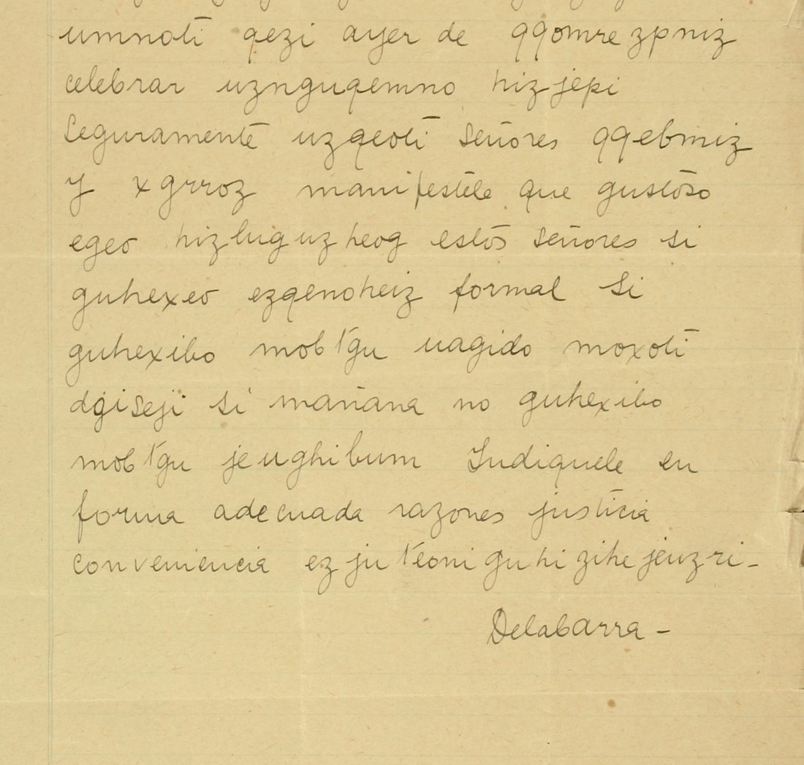

At a glanceCiphertext-only break · partial (89% of the cipher)
- The telegram
- A telegram of 13 lines headed “N-Y- Aug. 11-13”, to the Secretaría de Relaciones, signed “Delabarra”, in clear Spanish with 27 cipher words (216 letters); a typed copy on the second image regroups the same letters.
- Where
- CEHM-Carso, Mexico City, Fondo X-1 (manuscritos de Francisco León de la Barra), X-1.4.310.1, two images. Not on DECODE. Part of catalogue entry 1463; its other cipher items are not read.
- The cipher
- A lower-case monoalphabetic substitution, 20 cipher letters; W is written as two v; r stands for h and for t.
- How it was read
- Annealing with Spanish 4-grams on the 216 letters, guided by the clear words around them, then four rare letters set by hand. A key frozen on the cipher words of lines 1-6 read 110 of the 112 letters of lines 7-13 correctly, none wrong.
- What it says
- “Señor Long, jefe sección asuntos latino-americanos departamento estado” (identified as Boaz W. Long by the contributor, not by the telegram) came from Washington to see De la Barra, surely sent by Wilson and Bryan; if formally invited he will confer with them, otherwise he sails for Europe; the ministry is to set out the case for immediate recognition.
- Still open
- Three words carry a marked repair (vv for W twice, rr for y in Bryan), so the strict share is 88.9%, under the 95% bar. s = x and l = f rest on one word each. The freezing order rests on the contributor’s record.
- Credit
- Transcription, solve and reading by WAINUT with AI language-model agents, from the CEHM images; no human palaeographer checked the text. The project re-ran the scripts, ran its own controls and compared the pencil copy with the transcription (groups compared on the images; the number of letters compared was not recorded).
01 The telegram
The first image is a pencil text headed “Telegrama / N-Y- Aug. 11-13 / Secretaría Relaciones = México =”, thirteen lines, signed “Delabarra”; the second is a typed copy (“august 11th - 13, Secretario Relaciones - Mexico City”) of the same text. Some words (Señor, jefe, ayer, maniféstele, si, mañana) are clear Spanish; the others, among them the visitor’s name and office, are in cipher. The two copies agree on 215 of 216 cipher letters: the typist dropped one h in invitación.

02 The key
A one-to-one letter substitution with three oddities: W has no letter and is written as two v (qq in Washington and Wilson); r stands for h in Washington and for t in latino and reconocimiento, while n is t in nine other places; and rr stands for the y of Bryan, a repair that has no second place to test. The fonds’ key sheet X-1.5.466.1 was tried both ways and reads no Spanish; the key of the 1912 “Mundic” telegrams (its own page) is a different one.
03 The test
The contributor froze the 18 letters used by the cipher words of lines 1-6 and applied them mechanically to lines 7-13: 110 of 112 letters right, none wrong, two not in the frozen key (l in conferenciar, s in próximo, one occurrence each); 14 of 16 groups wholly right. The key was built with the clear words as context, as the page says; the held-out lines have clear words of their own. The order (frozen first, counted after) rests on the contributor’s record: one commit, no external timestamp.
Our own control: the held-out lines decoded with the frozen key score −2.238 per letter in a Spanish 4-gram model, against −6.47 on average and −4.00 at best for 2,000 keys with the same plain values shuffled over the cipher letters (z 5.6); the full key on all 216 letters scores −2.412 against −4.87 at best (z 6.9). The contributor’s own check gives −2.275 per letter against −6.85 for random keys (z 7.5); verdict: pass.
04 The reading
Señor Long, jefe sección asuntos latino-americanos departamento estado, vino ayer de Washington celebrar entrevista conmigo. Seguramente enviado señores Wilson y Bryan. Maniféstele que gustoso iría conferenciar estos señores si recibía invitación formal. Si recíbola, saldré Europa sábado próximo; si mañana no recíbola, saldré miércoles. Indíquele en forma adecuada razones justicia, conveniencia inmediato reconocimiento. Delabarra.
In English: Mr Long, chief of the Latin American affairs section of the State Department, came yesterday from Washington to hold an interview with me; surely sent by Messrs Wilson and Bryan. Tell him that I would gladly confer with these gentlemen if I received a formal invitation. If I receive it, I leave for Europe next Saturday; if I do not receive it by tomorrow, I leave on Wednesday. Set out to him in a proper way the reasons of justice and expediency for immediate recognition. That Long is Boaz W. Long, and that the recognition meant is of the Huerta government, is the contributor’s reading of the history, not read here from the telegram; it was not checked beyond the contributor’s search of the published literature.
Counted by the README rule, strictly: 27 cipher words, 24 verbatim from the signs and 3 with a marked repair (vv for W in Washington and Wilson, rr for y in Bryan), no guesses, no holes: 88.9%. Taking vv as the encoder’s spelling of W, the contributor’s alternative figure is 96.3%. The six sentences read coherently (grade A), but the strict share is under 95%, so the telegram is read in part.
05 What remains uncertain
- Bryan: the group xgrroz gives b-r-r-r-a-n; rr for y has no support (no other y in the telegram) and the typed copy has the same letters, so it is the encoder’s own spelling; marked as a repair (too short to test).
- s = x (próximo) and l = f (conferenciar) each rest on one word (too short).
- The typed copy was fetched at the integration and not compared letter by letter; the pencil copy was compared line by line on the images and the groups agree (the number of letters compared was not recorded). A second AI reader checked all 7 typed lines and pencil lines 3, 6, 7 and 13 and found no difference.
- The archive’s own catalogue summary of the item was not compared with the reading. No decipherment is on either copy; the contributor’s search of the literature (Foreign Relations of the United States 1913 and press on De la Barra’s journey) found nothing on this telegram.
Full texts
The transcription and the decryption of every document on this page, so that the reading can be used and checked. Short files are shown here; all are in the repository.
Telegram of 11 Aug 1913 read in part
“Señor Long, jefe sección asuntos latino-americanos departamento estado” (the contributor’s identification: Boaz W. Long) came from Washington to see De la Barra, surely sent by Wilson and Bryan; De la Barra would confer with them on a formal invitation, otherwise he leaves for Europe on Saturday or Wednesday; the ministry should press the case for immediate recognition.
Builds coherent sentences, but under the read bar of 95% of words read as sense (89% here); the holes are marked in the reading.
Transcription
# X-1.4.310.1 (CEHM-Carso, Fondo X-1), image 0001, reconciled with the typed copy on image 0002. # Letter for letter the two witnesses agree (216 cipher letters) except one place: L08 ezqenoheiz (pen) against # qenoeiz (typed, after the regrouping) - the typist dropped h; the pen copy is kept (it gives invitacion). # Group boundaries follow the pen copy; they do not matter to the cipher (the typist regrouped freely). L01 =Señor= bizp =jefe= muhheiz omaznim L02 borezi ojugehozim tudognojuzni L03 umnoti qezi =ayer= =de= qqomrezpniz L04 =celebrar= uznguqemno hizjepi L05 =Seguramente= uzqeoti =Señores= qqebmiz L06 =y= xgrroz =manifestele= =que= =gustoso= L07 egeo hizluguzheog =estos= =señores= =si= L08 guhexeo ezqenoheiz =formal= =Si= L09 guhexibo mobtgu uagido moxoti L10 dgiseji =si= =mañana= =no= guhexibo L11 mobtgu jeughibum =Indiquele= =en= L12 =forma= =adecuada= =razones= =justicia= L13 =conveniencia= ez juteoni guhi zihejeuzri
Decryption
L01 Señor long jefe seccion asuntos L02 la(h|t)ino americanos departamento L03 estado vino ayer de vvas(h|t)ington L04 celebrar entrevista conmigo L05 Seguramente enviado Señores vvilson L06 y br(h|t)(h|t)an manifestele que gustoso L07 iria conferenciar estos señores si L08 recibia invitacion formal Si L09 recibola saldre europa sabado L10 proximo si mañana no recibola L11 saldre miercoles Indiquele en L12 forma adecuada razones justicia L13 conveniencia in mediato reco nocimien(h|t)o
Reading
# X-1.4.310.1: Francisco León de la Barra to the Secretaría de Relaciones Exteriores, New York, 11 August 1913 (reading)
CEHM-Carso, Fondo X-1 (Manuscritos de Francisco León de la Barra), X-1.4.310.1. Image 0001: pencil text headed
"Telegrama / N-Y- Aug. 11-13 / Secretaría Relaciones = México =", signed "Delabarra"; image 0002: typed copy
("august 11th - 13", "Secretario Relaciones - Mexico City - Mexico"). Clear Spanish with cipher words; the two copies
agree letter for letter except one letter the typist dropped.
Marks: `{x/y}` the mechanical value x read as y. The two-valued key letter r (h|t) is read as either value without a
mark. Clear words of the telegram are copied as written (manifestele, Indiquele).
```marked
L01 | Señor Long, jefe sección asuntos
L02 | latino-americanos departamento
L03 | estado, vino ayer de {vv/W}ashington
L04 | celebrar entrevista conmigo.
L05 | Seguramente enviado señores {vv/W}ilson
L06 | y Br{hh/y}an. Manifestele que gustoso
L07 | iría conferenciar estos señores si
L08 | recibía invitación formal. Si
L09 | recíbola, saldré Europa sábado
L10 | próximo; si mañana no recíbola,
L11 | saldré miércoles. Indíquele en
L12 | forma adecuada razones justicia,
L13 | conveniencia inmediato reconocimiento.
```
Spanish, normalised: Señor Long, jefe [de la] sección [de] asuntos latino-americanos [del] departamento [de] estado,
vino ayer de Washington [a] celebrar entrevista conmigo. Seguramente [es] enviado [de los] señores Wilson y Bryan.
Manifiéstele que gustoso iría [a] conferenciar [con] estos señores si recibía invitación formal. Si recíbola, saldré
[para] Europa sábado próximo; si mañana no recíbola, saldré miércoles. Indíquele en forma adecuada [las] razones [de]
justicia [y] conveniencia [del] inmediato reconocimiento. Delabarra.
Notes
- The telegram says only “Señor Long”; the contributor identifies him as Boaz W. Long, chief of the Division of Latin American Affairs of the State Department in 1913.
- W is written as two v (qq) in Washington and Wilson: the key has no W. Marked {vv/W}; not a misreading.
- Br{hh/y}an: the group xgrroz gives b-r-r-r-a-n, the second and third r for the y of Bryan. r is h in Washington and t
in latino and reconocimiento; for y it has no support. Marked as a repair; the sense (Wilson and Bryan) is not in doubt.
- próximo: s occurs only here; its value x is set from this word alone (with j the word would be "prójimo").
- "conferenciar": l occurs only here (f).
- "recíbola" = la recibo (the invitation), telegraphic enclitic.
Cipher words: 27 (latino-americanos, in mediato and reco nocimiento counted as one word each): 24 verbatim, 3 with a
marked repair (Washington and Wilson: vv for W; Bryan: rr for y), 0 guesses, 0 holes, 0 from a gloss. Clear words: 26.
scripts/check_marks.py counts all 53 words together (clear words as verbatim): 50 verbatim, 3 repairs.
Strict share of cipher words verbatim: 24/27 = 88.9%. If vv for W is taken as the encoder's spelling rather than a
repair, 26/27 = 96.3%; the state proposed here is the strict one.Translation
# X-1.4.310.1: translation (English) Telegram, New York, 11 August 1913, Francisco León de la Barra to the Secretaría de Relaciones Exteriores, Mexico. Words in cipher in the original are in italics. "Mr. *Long*, chief of the *section of Latin-American affairs* of the *Department of State*, *came* yesterday from *Washington* to hold an *interview with me*. Surely [he was] *sent* by Messrs *Wilson and Bryan*. Tell him that I *would* gladly *confer* with these gentlemen if I *received* a formal *invitation*. If I *receive it*, I *shall leave* [for] *Europe* next *Saturday*; if I do not *receive it* tomorrow, I *shall leave* on *Wednesday*. Point out to him in suitable form the reasons of justice and expediency of *immediate recognition*. Delabarra." No holes. "Bryan" rests on a marked repair (rr for y); "next" (próximo) rests on a key value taken from this word.
Key: key.tsv, key_frozen.tsv
06 Sources
- CEHM-Carso (Centro de Estudios de Historia de México, Fundación Carlos Slim), Fondo X-1: X-1.4.310.1, images 0001 (pencil) and 0002 (typed), direct JPG from the CEHM viewer, fetched 12 November 2026; the viewer refused nothing.
- Transcription, key, reading and scripts by WAINUT (pull request #467), in
targets/delabarra1913.
The key, the transcriptions, the reading and the checks are in targets/delabarra1913.
Cite this page
WAINUT and Daniel Bourdeau, “Francisco León de la Barra to the Foreign Ministry, New York, 11 August 1913”, Cyphersolver, posted 12 November 2026, https://cyphersolver.com/delabarra1913.html.